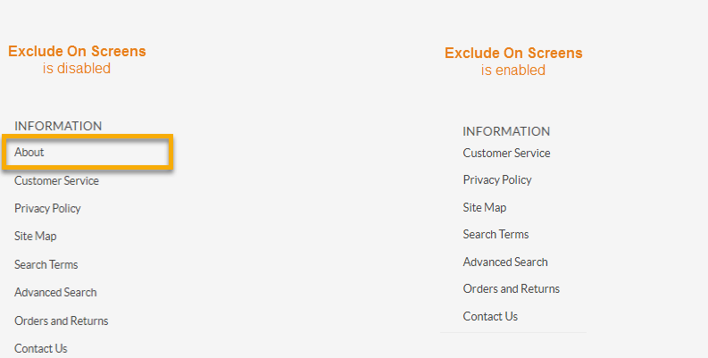
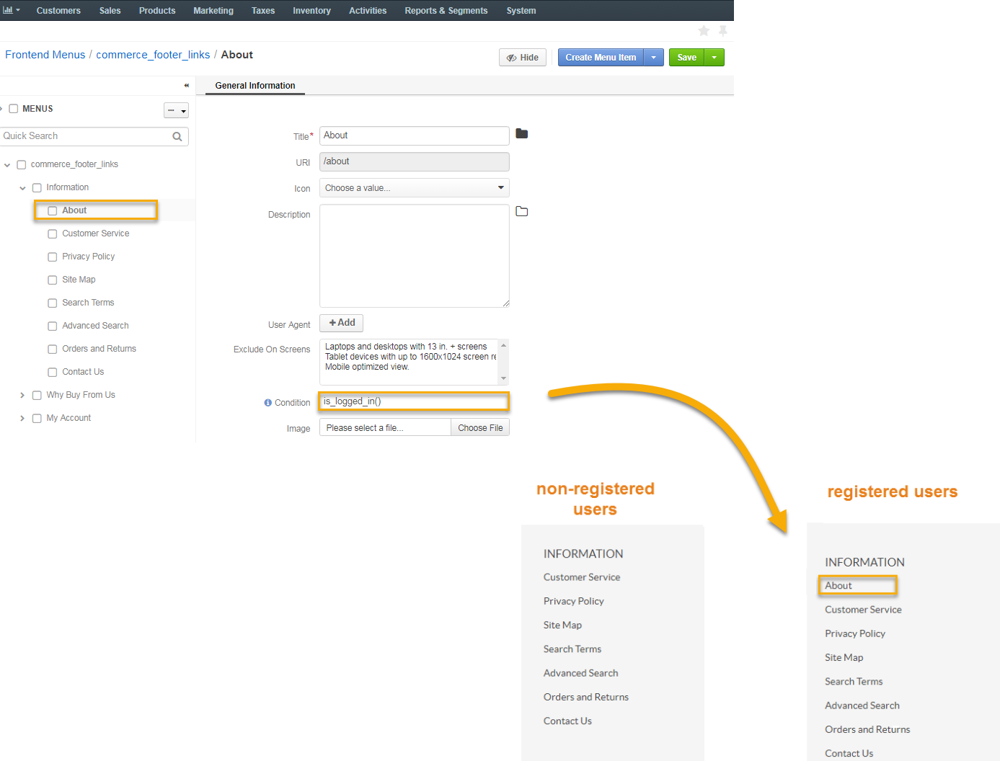
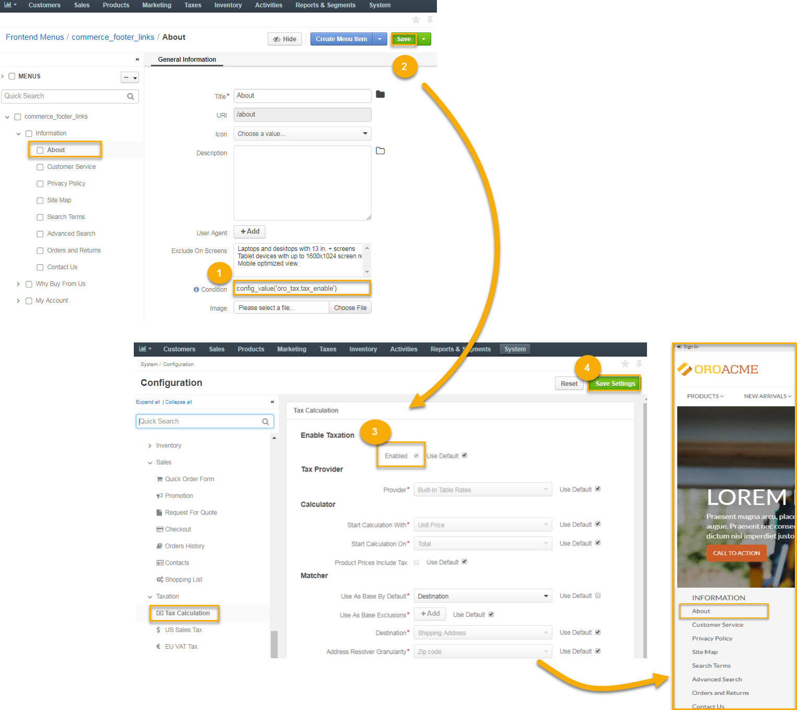
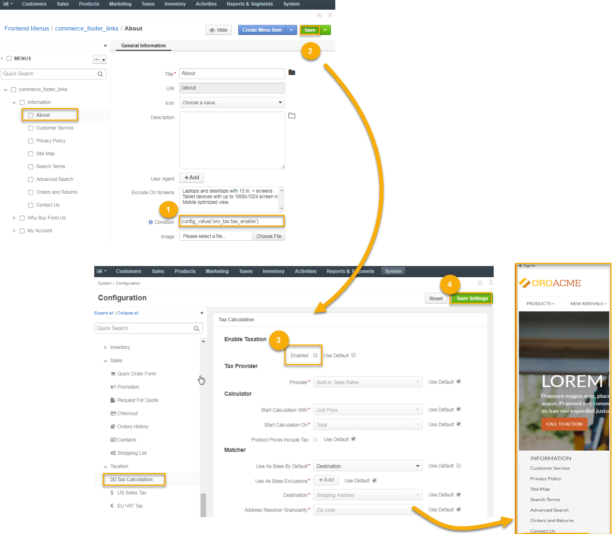

Customizing a Menu¶
Generic Principles¶
A menu may be multi-level like, for example, a default OroCRM and OroCommerce Management Console main menu. The child menu items are nested under parent menu items (e.g. Accounts, etc are nested under the Customers).

Menu items on the same level of hierarchy may be visually separated by a divider that looks like a horizontal line.

Dividers help you logically organize menu items.
Note
Some menus do not support displaying dividers (on a particular level in the tree, or in general). For example, if you add a divider to the top level of OroCRM and OroCommerce Management Console main menu (application_menu), the divider is not displayed.

Edit a Menu¶
To view and edit menu contents, click on the menu name or on the View icon in the corresponding row of the menu list.

On the page that opens, the menu item tree is shown in the left panel. Center is reserved for the menu item configuration.
Toggle the Menu Tree View¶
Hide / Show the Menu Tree¶
To minimize or maximize the left menu panel, click a double arrow on the top right of the panel.

Expand / Collapse a Menu Tree¶
To expand / collapse a parent menu item, click an arrow in front of it.

To expand / collapse all menu items, click the ellipses drop-down menu on the top right of the left panel and click Expand All or Collapse All.

Rearrange Menu Items / Dividers¶
You can change the position of an item / divider in a menu by dragging and dropping it in the left panel. You can change the order of menu items at the same level as well as move an item / divider to the higher or lower level.
When you drag-and-drop items, pay attention to the arrow that shows where the item will be placed:
If an arrow points to the place between items, that is where the moved item will be placed.

If and arrow appears in front of a menu item, then the moved item will become a child of the item that the arrow points to.

Add a Menu Item¶
In the left panel, click a menu item which will be parent for the menu item that you create.
Click Create drop-down on the top right and click Create Menu Item on the list.

The created menu item will appear as the last one on the list of children of the same parent item. You can move it to the position that you need, as described in the Rearrange Menu Items / Dividers action description.
In the right part of the page, specify the following information:
Title—A name for the menu item. This is how this menu item will be represented in the menu.
Click the Translations icon to provide spelling for different languages. Click the Default Language icon to return to the single-language view.

URI—An web address of the page or resource that this menu item opens.
You can specify an absolute URI or one relative to the application URI (as specified in Application Settings in System Configuration).
If this menu item serves as a non-clickable parent that does not link itself to any resource (like Customers in the default main menu), type #.
Icon—From the list, select the icon that will denote the menu item.
Note
Sometimes menus (or menu levels) may not be supposed to display icons. For example, icons added to the first level of the main menu (application_menu) are displayed only when this menu is set to appear on the left.
Description—Type a short but meaningful description of the menu item.
Click the Translations icon to provide spelling for different languages. Click the Default Language icon to return to the single-language view.

Click Save to save your changes. If you wish to start creating another menu item right away, click Save and New on the top right.
Important
You need to reload the page to see changes.
Edit a Frontend Menu¶
To update the frontend menu contents, follow the Customize Default Frontend Menus guide and click the menu name or on the View icon in the corresponding row of the frontend menu list.

On the page that opens, the menu item tree is shown in the left panel. The General Information section is reserved for the menu item configuration, which you can update, as shown in the Add a Menu Item section.

Moreover, you can customize additional visibility restrictions in the following fields in order to selectively display or hide some menu items from the customer:
User Agent¶
User agent is unique to every customer. It reveals a catalog of technical data about the device and software that the customer is using. You can control whether to show or hide some menu items from the customer by proceeding with the following steps:
- Click +Add next to the User Agent field.
The following text field displays:

- Fill in the text field with a user agent substring or a string, if required.
Note
A user agent string is a combination of user agent application versions, operating systems, crawlers, and other scripts which are specific for each user (e.g. Mozilla/5.0 (Windows NT 6.1; Win64; x64) AppleWebKit/537.36 (KHTML, like Gecko) Chrome/60.0.3112.113 Safari/537.36).
A user agent substring is a part of the aforementioned string (e.g. Mozilla, Windows, Safari, etc).

Select the corresponding operation from the list.
- The contains operation determines whether the specified substring is included in the user agent string (e.g. in case you mention Mozilla, all the versions of Mozilla in the user agent string will meet the requirements of this function).
- The does not contain operation determines whether the specified substring is not included in the user agent string.
- The matches operation checks whether the specified value fully matches the user agent string (e.g. you need to provide a version of Mozilla to meet the requirements of this function).
- The does not match operation checks when the specified value does not match the user agent string.
To create more advanced condition, you can combine constrains into the expression using logical AND and OR operators:
Click + And below the operation field within the same block to add another constrain block into the expression via AND.
AND operation means that only those user agents that comply with all the specified conditions in a group will be selected.
Click + Add at the bottom of the expression block to add another constrain block into the expression via OR.
OR operation activates the expression once any of the constraint blocks in a group evaluates to true.
{kind=link}
Exclude On Screens¶
Exclude On Screens enables you to hide the menu items on the specified screens sizes.
- Click any screen size to select the one for which the menu will be hidden from the customer.
- Hold Ctrl and click the value to select/deselect multiple screens.
- Click Save.

As an illustration, let us hide the About menu item from the desktops with 13 in. screen by enabling Exclude On Screens and selecting the corresponding screen size.
Condition¶
Condition enables you to restrict visibility of a menu item using the following functions:
The is_logged_in() function stands for the registered users. If entered, only the users who have logged into the Oro storefront are enabled to view the corresponding menu item.
The !is_logged_in() function stands for the non-registered users. If entered, only the unregistered users are enabled to view the corresponding menu item.
The config_value(‘some_identifier’) function limits visibility of the corresponding menu item upon specifying the certain value instead of ‘some_identifier’.
As an example, let us make the About section in the storefront visible to customers with configured taxes. For this, we need to:
- Customize the config_value(‘some_identifier’) function with the required value instead of some_identifier. In our case, it is the oro_tax.tax_enable value.
- Click Save on the top right of the About menu page to save the changes.
- Enable Tax Calculation in the system configuration. More information on tax configuration can be found in the relevant Configure Tax Calculation topic.
- Click Save on the top right of the Tax Calculation configuration page.
The steps are illustrated below:
 
Add a Divider¶
- In the left panel, click a menu item which will be parent for the menu divider that you create.
- Click Create drop-down on the top right and select Create Divider.

The created divider will appear as the last one on the list of children of the same parent item. You can move it to the position that you need, as described in the Rearrange Menu Items / Dividers action description.
Important
You need to reload the page to see changes.
Note
Some menus (or some menu levels) cannot display dividers. For example, if you add a divider to the first level of the main menu (application_menu), this divider will not be displayed.